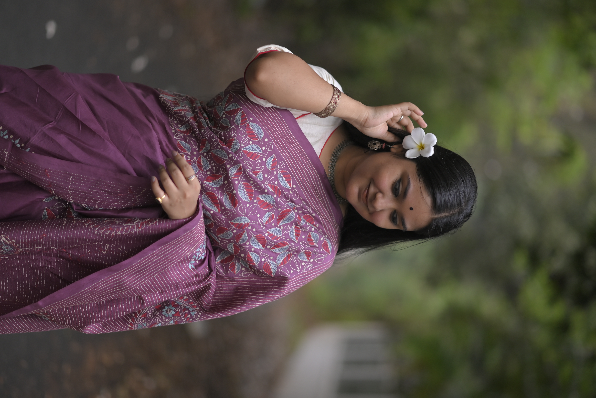

a World was Woven
From a Single Thread, a World was Woven
বুনন was born not in a boardroom, but at the edge of a loom — in a small village in West Bengal, where a grandmother's fingers moved with quiet authority over threads of silk and cotton, telling stories that no pen had ever written.
We watched the old traditions fade as machines took over and villages emptied. We refused to let that happen. বুনন is our answer — a bridge between the ancient art of hand-weaving and the modern world that has forgotten its beauty.
"প্রতিটি সুতোয় একটি জীবন, প্রতিটি বুননে একটি স্বপ্ন।"
— In every thread, a life. In every weave, a dream.Today, বুনন works with over 200 rural women weavers across Bengal, Jharkhand and Odisha — ensuring fair wages, artistic freedom, and a platform where their craft finds the dignity it deserves.